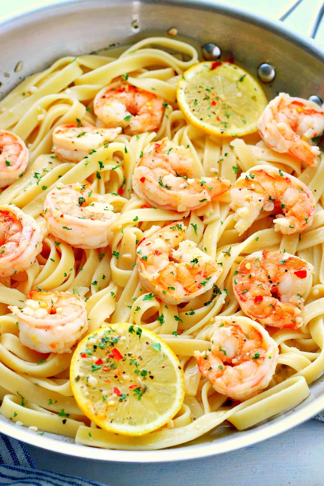

Home
Scampi

Description
Shrimp scampi is a light, flavorful pasta dish made with shrimp sautéed in garlic, butter, olive oil, and white wine. It’s typically tossed with linguine or angel hair pasta and finished with lemon juice and fresh parsley. The sauce is simple but rich, highlighting the natural sweetness of the shrimp. It’s bright, slightly tangy, and comforting without feeling too heavy.
Ingredients
- 1 lb Large Shrimp
- 2 tbsp unsalted butter
- 2 tbsp olive oil
- 4 cloves garlic, minced
- 1/4 tsp red pepper flakes
- 1/4 cup fresh parsley, chopped
Steps
- Sear shrimp in a large skillet with 1 tbsp olive oil and 1 tbsp butter over medium-high heat for 1-2 minutes per side until pink. Remove to a plate.
- In the same skillet, add remaining olive oil and butter, then cook garlic and red pepper flakes over medium heat for 30–60 seconds.
- Add white wine and simmer until reduced by half (about 2 minutes)
- Stir in lemon juice and remove from heat. Return shrimp and any juices to the skillet and toss to coat. Garnish with parsley and serve.